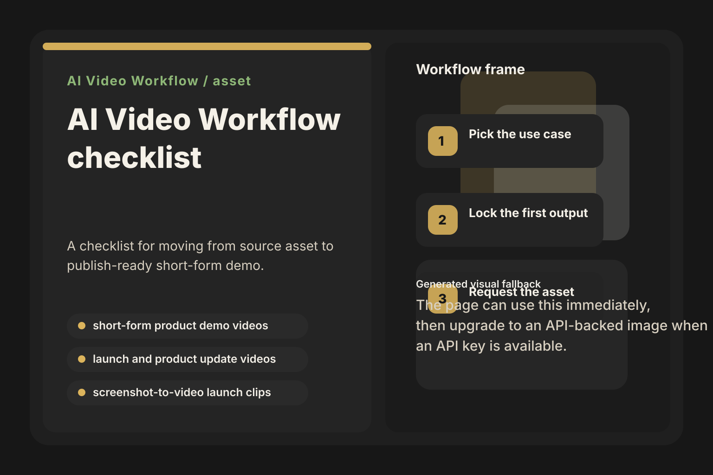

Fill the checklist with the person who owns source material, execution, and final approval before any tool testing begins.
AI Video Workflow
AI Video Workflow workflow checklist is ready
Download the asset, use the first module on one narrow pilot, and keep the workflow notes that make the second run cleaner than the first.

Start here in the first 30 minutes
Define the success metric and failure point for the first production-shaped pilot before the team debates output quality by instinct.
As soon as the pilot breaks, log the exact review, rework, or quality issue so the next operator does not rediscover it.
What is inside
Owner: The operator or marketer responsible for the first live test. Done when: A pass/fail definition before any tool or prompt testing starts. Failure point: Trying to solve the entire category in one pass.
Owner: The teammate who owns source material and final approval. Done when: Everyone can name the input, output, and review bar without reopening search. Failure point: Comparing tools before the team agrees on what “good” looks like.
Owner: The buyer, operator, or builder making the implementation decision. Done when: The field collapses to a manageable shortlist instead of another endless tool list. Failure point: Keeping every visible option in play because the page never makes a recommendation.
Owner: The person executing and reviewing the first production-shaped test. Done when: The team learns where review overhead, rework, or output quality actually breaks down. Failure point: Calling the pilot a success without naming what had to be fixed by hand.
Owner: The teammate who will hand this process to the next operator. Done when: The next run starts from an asset instead of from fresh research. Failure point: Leaving the learning inside a single person’s head instead of packaging it.
Why this asset should help
5 named workflow checkpoints already exist in the system, each with an owner, success metric, and failure point. The checklist turns that research into a repeatable operating document.
Collect the source asset and operating constraints and Run one measurable pilot are where teams usually lose time. The checklist makes those review thresholds explicit before the next pass.
Turn the pilot into a reusable asset is already part of the workflow model, which means this asset exists to transfer the process to the next operator instead of trapping it in one person’s head.